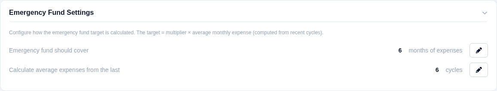
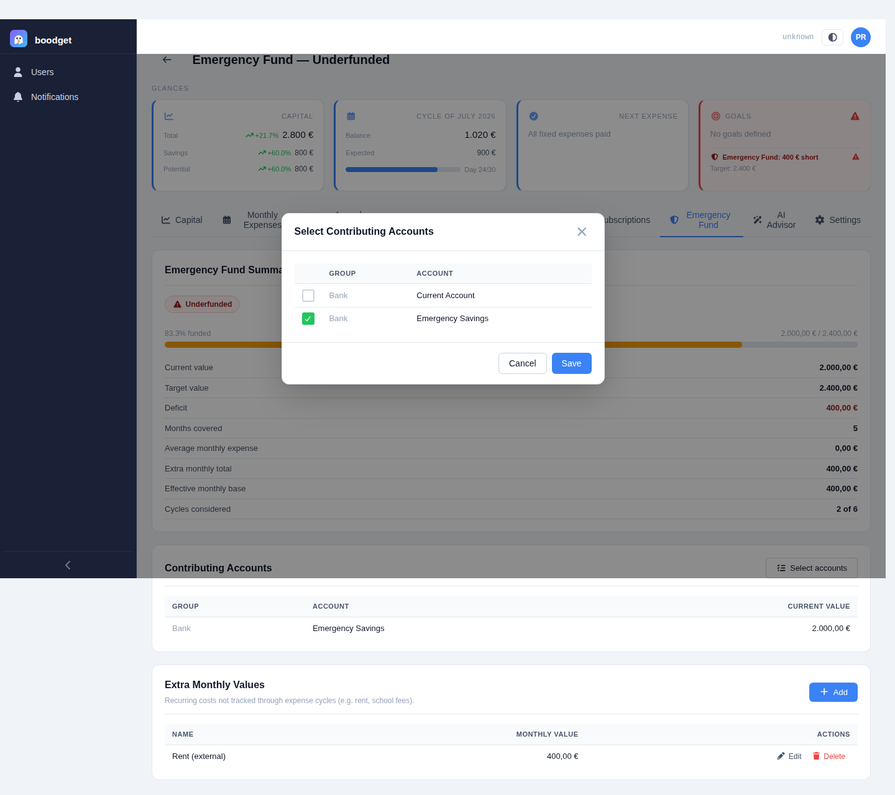
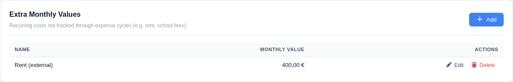
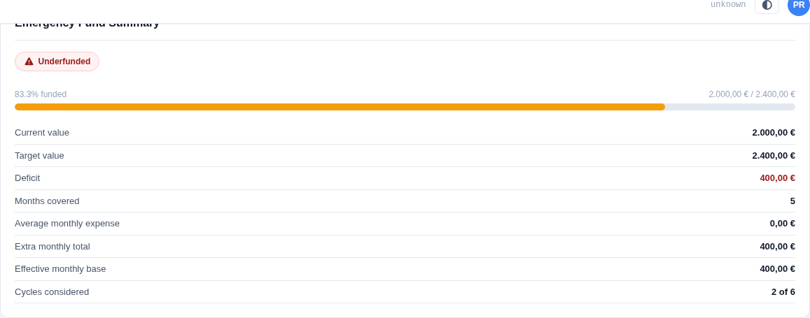
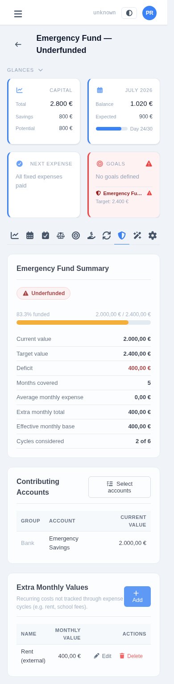
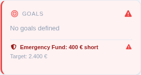

Sizing your Emergency Fund
A savings buffer sized in months of expenses, not a round number you picked once and forgot about — boodget derives the target from your actual recent spending and checks it against real account balances automatically. This page walks through setting it up and reading it, step by step.
In Settings → Emergency Fund Settings, set two numbers: how many months of expenses the fund should cover (default 6), and how many recent cycles to average when computing a typical month's spend (default 6, using fewer if the dossier doesn't have that many yet). Distributions are never counted — only fixed and budget expenses feed the average.

From the Emergency Fund tab, pick which accounts count as your buffer — their combined value from your latest Capital snapshot is the fund's current value. The same account can contribute here and to a Goal at the same time; there's no exclusivity. An account you later archive is automatically dropped from the total.

Not everything recurring runs through a cycle. Extra monthly values — rent, school fees, anything paid outside your Monthly Expenses template — get added to the cycle-derived average before the multiplier is applied, so the target reflects your real monthly burn, not just what happens to be templated.

The summary card shows a Healthy or Underfunded badge, a progress bar, and every figure behind the target: current value, target value, deficit or surplus, months covered, the average monthly expense, the extra monthly total, the effective monthly base (average + extras), and exactly how many cycles were considered. If no cycles exist yet in the dossier, the card explains that instead of showing a target it can't compute.


An underfunded fund doesn't wait for you to open its tab. Whenever the dossier has at least one cycle and the fund is underfunded, a red banner — the deficit and the target — is embedded at the bottom of the Goals card in the Glances panel at the top of the dossier, and the whole card switches to its red warning state. Clicking the banner jumps straight to the Emergency Fund tab, independently of clicking the rest of the card (which goes to Goals instead). Once the fund is healthy, or no cycles exist yet, the banner simply isn't shown.
